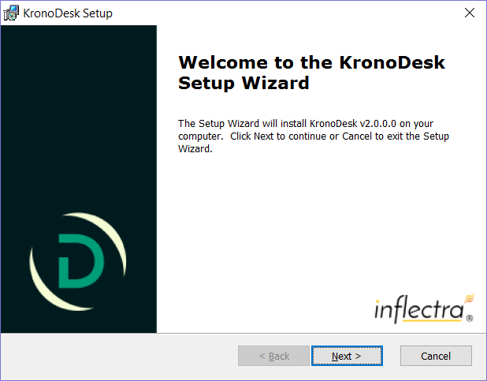
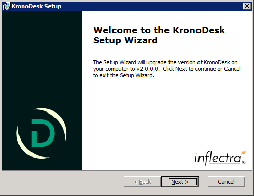
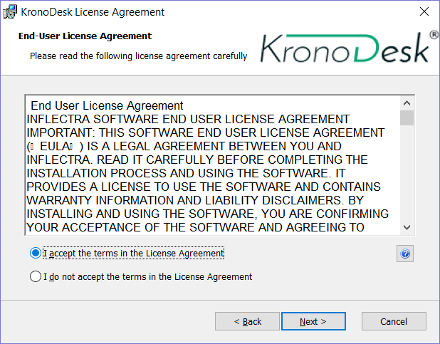
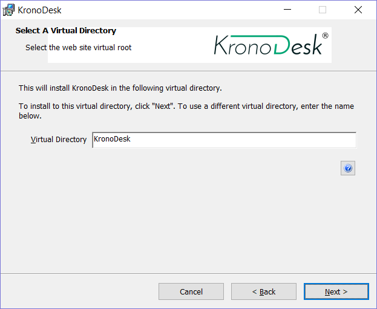

Installing KronoDesk®
This section outlines how to prepare your system for installation of KronoDesk®, how to actually install the software using the provided installation package, and finally how to ensure that your web-server is correctly configured to ensure secure operation.
The first sub-section will outline what hardware and software configurations are supported and the exact installation sequence for Windows 2012, 2008, 2003, 8, 7, Vista and Windows XP. The second sub-section will explain how to load the KronoDesk® software onto the server, and discuss common problems and solutions.
The minimum hardware and software requirements for running the KronoDesk® system are:
| Requirement | Minimum Specification |
|---|---|
| Server Requirements | |
| Processor: | Intel® or AMD® x86 or x64 compatible processor |
| Memory: | 8 GB recommended |
| Database: | Microsoft SQL Server 2017 Microsoft SQL Server 2016 Microsoft SQL Server 2014 Microsoft SQL Server 2012 Microsoft SQL Server 2008 R2 SQL Server Express is supported, but not recommended for production due to limitations. |
| Web Server: | Internet Information Services (IIS) 7.0 or higher .NET 4.5.2 Framework or higher |
| Client Requirements | |
| Web Browser: | Mozilla Firefox Google Chrome (Desktop and Android) Apple Safari (Desktop and iOS) Microsoft Edge Opera Internet Explorer 11.0 (not recommended) |
*Note that KronoDesk® can be loaded onto either Windows Server or workstation editions, provided that the IIS web-server is installed and that SQL Server is available as a database engine. However Windows workstation editions can only support a maximum of 5 concurrent user web sessions. In general unless there are only going to be a couple of client machines hitting the server, we recommend using a Windows Server OS.
System Prerequisites
Assuming that you have already installed the appropriate version of Microsoft Windows onto your computer (or that has been pre-installed for you), you need to then make sure that the various prerequisites have been correctly added to your installation before trying to install KronoDesk®. The KronoDesk® installer will check to ensure that the various prerequisites are in place, and will abort the installation if any are missing, indicating to you what action needs to be taken.
We recommend that you install / configure the prerequisites in the following order:
-
Install the .NET Framework v4.5.2
-
Install SQL Server 2008R2, 2012, 2014, 2016, or 2017.
-
Install the latest version of Internet Explorer that your server OS allows
-
Ensure that IIS is installed
-
Ensure that ASP.NET 4.5.2 is enabled
Install the .NET Framework v4.5.2.
On Windows 10, 8 and Windows Server 2012+ installations, Microsoft .NET Framework v4.5.2 is usually installed as part of the factory configuration, whereas on earlier operating systems, you might need to manually add the .NET 4.5.2 framework.
To see which version of the Microsoft .NET framework installed, open up Windows Explorer® and navigate to C:\WINDOWS\Microsoft.NET\Framework and then the subfolders listed will indicate which version(s) of the framework you have installed:

To install the .NET Framework, please go to the Microsoft website and install the latest version of the .NET Framework available for your operating system. At the time of writing it was .NET 4.6.
Install SQL Server 2008R2+
Install the appropriate version of the database software, following the instructions provided with the installation. Since KronoDesk is an enterprise-level software, we recommend SQL Server 2008 R2+, Web, Standard, or Enterprise editions. Express editions have limitations on Ram and CPU usage, and can cause significant performance issues. We also recommend enabling FullText indexing, as KronoDesk will take advantage of those extra indexes and dictionaries produced for faster searching and result pages for users.
Install Modern Browser
The KronoDesk UI is compatible with all modern browsers, but uses some HTML5 specific features on some pages, so on other third-party mobile browsers, some pages may not appear correctly.
Ensure that IIS is installed
On Widows Server installations, you may have to install the IIS Role if it is not already active.
On Windows Server 2012+, you need to click on Server Manager, then under the "Roles" heading, choose the option to "Add Role" followed by selecting the new role "Web Server / IIS". Then click "Next" to bring up the role configuration screen:

Make sure that the following features are enabled:
-
Web Server (IIS)
-
Web Server
-
Common HTTP Features
-
Default Document
-
Directory Browsing
-
HTTP Errors
-
Static Content
-
HTTP Redirection
-
-
Application Development
-
.NET Extensibility 3.5
-
.NET Extensibility 4.5
-
ASP.NET 3.5
-
ASP.NET 4.5
-
ISAPI Extensions
-
ISAPI Filters
-
-
Management Tools
-
IIS Management Console
-
IIS Management Service
-
-
-
-
.NET Framework 4.5 Features
-
.NET Framework 4.5
-
ASP.NET 4.5
-
WCF Services
-
HTTP Activation
-
TCP Port Sharing
-
-
To verify that this IIS is now installed, type http://localhost into the address bar of Internet Explorer on your computer. You should see a screen displaying the initial IIS startup page:

Ensure that ASP.NET is installed
Now that you have both IIS and .NET installed, you need to make sure that the Active Server Pages (ASP.NET) components that allow IIS to access the .NET framework have been correctly configured. If you installed .NET after IIS then ASP.NET is typically configured for you, but if you installed IIS afterwards, then further manual steps may be necessary. The settings are different depending on which version of Windows you are using:
To verify that ASP.NET has been correctly configured, click on Start > Control Panel > Administrative Tools > Internet Information Services (IIS) Manager to launch the IIS administrative console:

You should see a section called "ASP.NET" occupying the top third of the IIS screen. If not, then you need to go back to section 2.1.3 and make sure that you chose the option to install ASP.NET when installing IIS.
Ensure the Visual C++ 2015 Runtime is Installed
Make sure you have the Visual C++ 2015 Runtime installed (both the x86 and x64 versions). If you are not sure whether you have that installed or not, please go to https://www.microsoft.com/en-us/download/details.aspx?id=40784 and download the x86 and x64 versions and try installing them. If they are already installed, the installer will let you know. We also provide a copy of the runtime in the CustomerArea of the Inflectra website.
Installing the Software
Now that all the prerequisites have been correctly installed, you are now ready to install KronoDesk® onto your system. To perform the installation, you will need the installation package downloaded from the Inflectra® website, the name of the organization that the software is licensed to, and the actual license key code which will be available in the customer area of the Inflectra® website.
To start the installation, double-click on the KronoDesk® installation package (it will have a filename of the form KronoDesk-v3.0.msi), and the Windows Installer will display the following dialog box:

If you are upgrading from an earlier version of KronoDesk®, the dialog box will be similar except that it will instead let you know that you are upgrading from an earlier version to the current one:

In this instance the installer will update the program files on your computer and migrate your data into the new version seamlessly. If for any reason you don't see the upgrade message and you have an existing installation, don't continue, but instead contact Inflectra® customer support first. This will ensure that your existing data is not overwritten by a clean install.
In either case, click the <Next> button to start the installation wizard which will gather information from you regarding how you want to setup the system, before actually installing the web-server files and database components. The next page of the installation wizard will display a list of all the required pre-requisites and whether the installer could find them or not:

If any of the prerequisites were not correctly installed, the installer will display a red 'X' icon next to the missing component(s). If this happens, please refer to section 2.1 for installation of any prerequisites. If for any reason you have the prerequisite installed but the installer was not able to find it (this can occasionally happen on certain environments), click the <Ignore> button to proceed with the installation.
Once the prerequisites have been correctly installed, clicking <Next> will bring you to the next page in the installation wizard:

The next screen in the installation wizard outlines the KronoDesk® End User License Agreement (EULA). Please read this carefully as it describes the legal contract between you -- the user of the software -- and Inflectra® Corporation, the developer and publisher. Once you have read the agreement and understood your rights and obligations, select the radio button marked "I accept the terms in the License Agreement" and click the <Next> button.
The following screen will be displayed:

Click on the KronoDesk® button to confirm that you want to install KronoDesk. Once you have done this, the following screen will be displayed:

You need to enter your full name, the organization that was issued the software license, and finally the full hexadecimal license key that was provided with the software. Once you click <Next>, the installer will verify that all three were entered, and that the license key matches the product being installed and that it matches the organization name. The installer will warn you of any discrepancies, but will allow you to proceed; however after installation, the system will not operate until a correct license key is entered.
If for any reason you are unable to get the provided license key to work, please contact Inflectra® customer support immediately and they will resolve the issue.
After clicking <Next>, you will be given the choice of installation to perform:

By default, the installer will install all of the KronoDesk® features onto the target system, so we recommend choosing "Complete Installation", which will both install the complete system -- application and database. For advanced users who want to change the folder to which the system is installed (by default it is C:\Program Files (x86)\KronoDesk), change the name of the database created (by default it will be KronoDesk) or to prevent the installation of the optional web-services data integration modules, you can choose the "Custom Installation" option, which allows you to change those settings prior to installation.
The "Application Only" installation is useful when you need to move the application to a different server, but want to leave the database installed on the same server. In this case you can use the "Application Only" installation on the new server, and once the installation is completed, change the name of the database pointed to in the "web.config" file to the existing database server.
This manual assumes that the "Complete Installation" option is chosen, in which case the following screen is displayed:

This screen allows you to change the name of the web-site URL that will be user to access the system. By default, users would need to type into their browsers: http://<server name>/KronoDesk. Should you want to have a different name -- other than KronoDesk -- change the name in the Virtual Directory box, otherwise simply accept the default name and click <Next>. Note: The installer will check to make sure that the name you have chosen is not already in use, and will warn you if it is.
Upon clicking <Next>, you will be taken the database connection screen:
You can connect to the SQL Server database using either Windows Authentication or SQL Server Authentication, and the process is slightly different for each mode:
Windows Authentication
This is the easiest option when the application and database will be residing on the same server. In this case, choose the "Windows Authentication" option and the Login/Password boxes will be disabled. In this case, the installer will connect to the database using your current Windows login to create the application database objects, and KronoDesk® will connect to the database during normal operation using either the ASPNET or NETWORK SERVICE Windows accounts (it depends on the version of the operating system).
SQL Server Authentication
This is the recommended and easiest option when the application and databases will be residing on different servers across the network. In this case, choose "SQL Server Authentication" and provide a SQL Server Login that has Database Owner (DB-Owner) permissions -- e.g. the built in System Administrator (SA) account. The installer will use this DB-Owner account to create the database objects, and KronoDesk® will use a special login (called KronoDesk by default) for normal application operations.
For either mode, in the "Server" box, you need to enter the name of the Microsoft SQL Server instance that is running on your system; the installer will default it to the hostname of the server (which in many cases will be correct). The easiest way to find out the database server name is to open up the SQL Server Administrative console (typically by clicking Start > Programs > Microsoft SQL Server > Enterprise Manager) and look for the name of the server.
Once you have entered the various pieces of information, click <Next>. The installer will attempt to connect to the database using the provided information, and it will display an error message if any of the information is incorrect. Assuming the information is correct, the following screen will be displayed:

This page lets you customize the name of the database login, database name and database user that the application will create. If you chose the "Custom Installation", then the fields will be editable, otherwise they will be read-only. Also if you chose "Windows Authentication" then the Database Login field will be set to the built-in Windows account associated with ASP.NET for the specific operating system being installed on (and cannot be changed). Once you have reviewed this page and made any changes, you should click <Next> to proceed:

Click the
The installer will then display a progress bar that gradually fills as the installation proceeds:
Once the installation is complete, the following message will be displayed:

Congratulations! You have successfully installed KronoDesk® onto your system. If you type http://localhost/KronoDesk into your browser you should see the KronoDesk® home page, as illustrated in the KronoDesk® User Manual. If for any reason you don't see the home page, please refer to Appendix A -- Troubleshooting IIS or contact Inflectra® Technical Support using one of the methods described at our website http://www.inflectra.com/Support.
The default login/password for accessing KronoDesk is:
-
Login: administrator
-
Password: PleaseChange
Security Considerations
It is important to note that by default, all web pages served by IIS using the HTTP protocol are unencrypted, and as such, the usernames and passwords used by KronoDesk® to log into the application can be read by network sniffing tools. If you are using KronoDesk® purely within an intranet environment, this may not be an issue. However if you are externally hosting KronoDesk® onto a publicly accessible website, we recommend installing a Secure Sockets Layer (SSL) encryption certificate, and restricting all web-traffic to the secure HTTPS protocol instead. For details on how to perform this task, please refer to Appendix B - Installing an SSL Certificate.